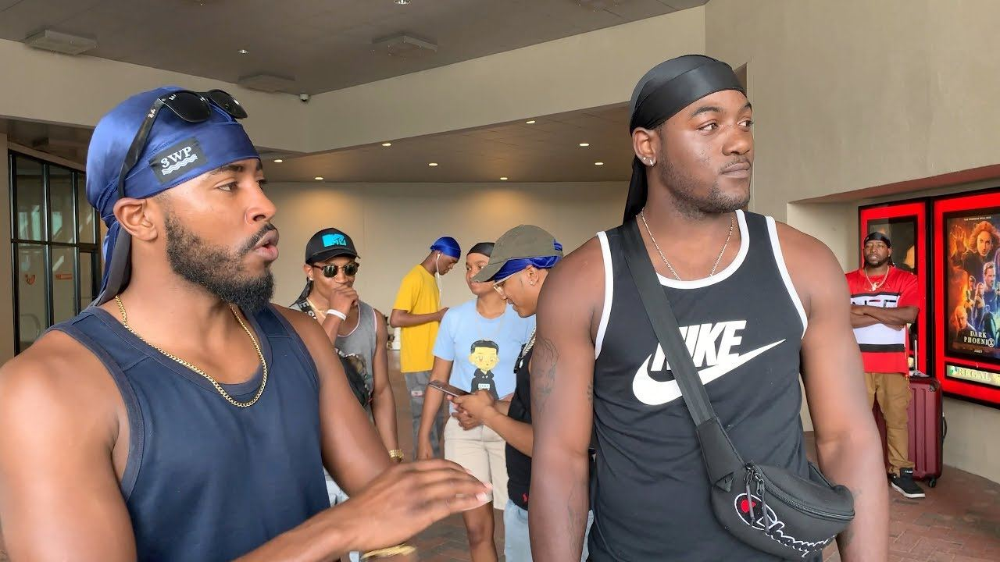

Contest-Level Wave Check Prep: The Final 72 Hours
A wave check looks spontaneous — somebody calls it, the durag comes off, the crowd reacts. At contest level, nothing about it is spontaneous. The wavers who win these moments, like the ones 360WaveProcess (@360WaveProcess) films in the video below, ran a deliberate preparation protocol in the days before. This is that protocol: the final 72 hours, structured hour by hour, for maximum depth, connection and shine when it counts.
72 to 24 hours out: the deep set
Schedule your last wash-and-style for the 72-to-48-hour window. Any later and the hair is still settling on contest day; any earlier and it is carrying days of buildup. Follow the wash with your longest brush session of the week — this is the session that sets the depth judges will see — then double-compress overnight.
From here on, protect the pattern like it is already finished. No gym sessions without a cap, no hats that crush, no experimenting with new products. Everything between the wash and the contest is preservation: maintenance brushing, light moisture, compression every night and during every nap.
Contest day: the reveal sequence
Morning of: a short, focused brush session — twenty minutes, all angles, finishing with a soft brush — then tie up and leave it alone. The hours before the check are not for training; they are for letting the compression do its quiet work. Eat, hydrate, and keep your hands out of your hair.
Thirty minutes before, do a final soft-brush pass and check the crown in a mirror — the crown is where contests are lost. Untie as late as you can. When the moment comes, take the durag off slowly, front to back, and do not touch the hair afterwards: no patting, no fixing. The reveal is the routine.
Etiquette and judging realities
Know what is actually being judged: depth, connection, consistency across all panels, crown quality, and overall health of the hair. A pattern that is deep but broken at the crown loses to a slightly shallower pattern that is complete. Prepare the whole head, not just your best side — the cameras will find every angle.
And carry yourself like the culture expects: call your check with confidence, respect other wavers' reveals, and keep it sporting whether you win the room or not. The wave check is a celebration of the discipline as much as a competition — the wavers who get invited back are the ones who understood both halves of that.
One last preparation detail separates the ready from the hopeful: rehearse the moment itself. Practice the untie at home, in front of the mirror, until it is smooth and unhurried — because on the day, nerves rush hands, and rushed hands grab, drag and disturb the very pattern they spent three days protecting. The reveal should look inevitable, like the outcome was never in doubt.
Watch: 360WaveProcess behind the scenes at a wave check — the standard you are preparing to meet
Video: “The 360 Waves Lifestyle: Pre Wave Check Interviews, OMG Who Will Win The Grand Prize!” by 360WaveProcess (@360WaveProcess) · Watch on YouTube
Shop the gear
Everything in this guide runs on the right gear: a durag that holds compression without slipping, a cap that stays put, and fabric that treats your hair right. The durag.store launch lineup is built to that standard — dual-layer construction, long tails, and stitching made to survive the routine. Join the launch list and use code GOLDSTANDARD for 15% off your first order.
Keep learning
- Styling a Durag With Outfits: Colour, Fabric and Occasion — Intermediate · Styling & Culture
- Choosing Durag Colours: What Works With Your Skin, Hair and Wardrobe — Basic · Styling & Culture
- Custom Print Durags: Designing, Printing, and What to Check Before You Buy — Intermediate · Styling & Culture
Sources: Video — “The 360 Waves Lifestyle: Pre Wave Check Interviews, OMG Who Will Win The Grand Prize!” by 360WaveProcess (@360WaveProcess), youtube.com. Guide written by the durag.store Wave Lab.